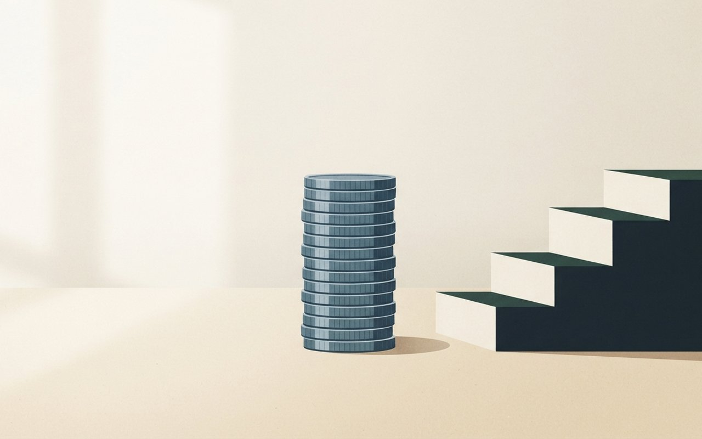

🎧 낭독 원고 보기
11월 27일 금요일, 데일리 브리프입니다. 오늘은 다섯 가지 소식을 전해 드립니다.
올해 세 번째로 금리가 올랐습니다. 한국은행 금융통화위원회가 26일 기준금리를 3.00퍼센트에서 3.25퍼센트로 0.25퍼센트포인트 올렸습니다. 7월과 8월 인상, 10월 동결에 이은 올해 세 번째 인상입니다. 표결은 5대 2였고, 위원 두 명은 동결을 주장했습니다. 한국은행은 내년 성장률 전망을 2.9퍼센트에서 4.1퍼센트로, 올해 전망은 3.3퍼센트에서 3.9퍼센트로 올렸습니다. 6개월 뒤 금리를 내다본 위원들의 점 21개 가운데 15개는 지금보다 높은 수준에 찍혔습니다. 같은 날 코스피는 0.29퍼센트 오른 4,711.21에 마감했습니다.
철도노조가 26일 오전 9시 안전운행 투쟁, 이른바 준법투쟁을 시작했습니다. 오후 5시 기준으로 수도권 광역전철 235대가 20분 넘게 늦었고, 일반열차 4편은 운행이 멈췄습니다. 노조는 인력 충원과 승진제도 개선, 추가 수당을 요구하고 있습니다. 준법투쟁은 12월 4일까지 이어지고, 요구가 받아들여지지 않으면 12월 10일부터 무기한 총파업에 들어갈 계획입니다. 코레일은 운행이 멈춘 열차 승차권을 전액 환불합니다.
학교비정규직 노동자 약 4만 명이 오늘 총파업에 나섭니다. 서울 여의도에서는 2만여 명이 모이는 집회가 열립니다. 노조는 기본급 4.9퍼센트 인상을, 교육 당국은 3퍼센트를 내놓았습니다. 경남에서는 262개 학교가 대체급식을 합니다. 경남의 다른 772곳은 정상 급식이고, 12곳은 급식을 하지 않습니다. 아이 학교의 급식 안내를 다시 확인해 두세요.
북한 조선중앙통신은 김정은 국무위원장이 25일 핵시설 세 곳을 시찰했다고 26일 보도했습니다. 무기급 핵물질 생산기지와 핵무기연구소, 그리고 처음 존재가 알려진 핵동력 관련 설비 생산기지입니다. 김 위원장은 비핵화 요구를 공공연한 선전포고라고 했습니다. 국방부는 엄중히 보고 있다며 핵 개발을 정당화하려는 시도를 즉각 중단하라고 촉구했습니다.
대법원은 26일 윤석열 전 대통령의 한덕수 전 총리 재판 위증 사건에서 특검의 상고를 기각했습니다. 1심과 2심의 무죄가 그대로 확정됐습니다. 대법원은 증언이 기억에 반하는 허위라는 점이 합리적 의심 없이 증명되지 않았다고 봤습니다. 서울신문은 윤 전 대통령이 12·3 비상계엄 관련 사건에서 무죄가 확정된 것은 처음이라고 전했습니다. 다음 달 4일에는 평양 무인기 사건의 항소심 선고가 예정돼 있습니다.
끝으로 오늘 서울 날씨입니다. 아침 최저 9도, 낮 최고 16도로 예보됐고, 오후부터 비 소식이 있습니다. 비의 양은 1밀리미터 안팎으로 많지 않지만 우산 챙기세요.
이상으로 오늘의 데일리 브리프를 마칩니다. 자세한 내용과 출처는 카드에서 확인하세요.
利
한국은행 금통위 · 26일
한은, 기준금리 3.25%로 인상 — 올해 세 번째, 5대 2 표결·내년 성장률 전망 2.9%→4.1%
한국은행 금융통화위원회가 26일 기준금리를 연 3.00%에서 3.25%로 0.25%포인트 올렸다. 7·8월 인상과 10월 동결에 이은 올해 세 번째 인상이다(파이낸셜뉴스·뉴스1). 표결은 5대 2로, 황건일·이수형 위원이 3.00% 동결을 주장했다. 인상 결정에 동결 소수의견이 2명 나온 것은 2023년 1월 이후 처음이다(뉴스핌).
한은은 성장률 전망을 올해 3.3%→3.9%, 내년 2.9%→4.1%로 올렸다. 6개월 뒤 금리를 내다본 점도표(21개 점)는 3.75% 7개·3.50% 8개·3.25% 6개로, 중간값이 3.25%에서 3.50%로 올라갔다(뉴스핌·머니투데이). 의결문에서는 추가 인상의 '속도' 문구가 빠졌다(뉴스1). 코스피는 26일 13.70포인트(0.29%) 오른 4,711.21에 마감했다(파이낸셜뉴스).
- 기준금리3.00% → 3.25%(+0.25%p) · 올해 세 번째 인상(7·8월 인상, 10월 동결)
- 표결5대 2 · 황건일·이수형 위원 동결 소수의견 — 인상 때 동결 2명은 2023년 1월 이후 처음
- 성장률 전망올해 3.3% → 3.9% · 내년 2.9% → 4.1%
- 점도표21개 점 · 3.75% 7개 · 3.50% 8개 · 3.25% 6개 · 중간값 3.25% → 3.50%
- 코스피26일 4,711.21 · +13.70p(+0.29%)
Marketing View · 마케터의 시선
점 21개 중 15개가 지금보다 위에 찍혔다. 이번 인상이 끝이 아니라는 신호로 읽힌다. 대출 상품을 파는 쪽은 '고정금리 전환'을, 예금 상품은 '금리 올랐을 때 묶어 두기'를 말할 시점이다. 다만 동결 소수의견이 두 명이라 속도는 장담하기 어렵다.
파이낸셜뉴스 — 인상 결정 뉴스핌 — 표결·전망·점도표 머니투데이 — 소수의견·점도표 뉴스1 — 의결문 파이낸셜뉴스 — 코스피 마감
파이낸셜뉴스(11/26 09:50·15:51)·뉴스핌(11/26 16:20)·머니투데이(11/26)·뉴스1(11/26 11:02) · 인상폭·표결·성장률·점도표 두 매체 이상 일치 · '몇 년 만의 최고' 표기는 매체별 불일치라 쓰지 않음 (확인 2026-11-27)
한은 기준금리 인상,
올해 세 번째
금통위가 26일 기준금리를 3.25%로 올렸어요. 위원 두 명은 동결을 주장했고, 내년 성장률 전망은 2.9%에서 4.1%로 크게 높였어요.
직전 전망|이번 전망 / 내년 성장률:2.9:4.1
5대 2|금통위 표결 · 동결 소수의견 2명
A neat stack of coins beside a small staircase stepping upward on a plain desk, soft morning light, minimal editorial illustration, no text, no logos, no people, no buildings, no currency symbols

鐵
코레일 · 수도권 광역전철
철도노조 준법투쟁 첫날, 광역전철 235대 20분 넘게 지연 — 일반열차 4편 운행 중지, 12월 10일 총파업 예고
전국철도노동조합이 26일 오전 9시 안전운행 투쟁(준법투쟁)을 시작했다. 코레일 집계로 오후 5시 기준 수도권 광역전철 235대가 20분 이상, 일반열차 4대가 30분 이상 늦었고, KTX는 20분 넘게 늦은 열차가 없었다(한국일보·파이낸셜뉴스). 새마을 2편(용산↔익산)과 무궁화 2편(용산→여수·용산→광주) 등 일반열차 4편은 운행이 중지됐다(한국일보).
노조는 인력 충원, 승진제도 개선, 추가 수당 지급을 요구한다. 준법투쟁은 12월 4일까지 이어지고, 요구가 받아들여지지 않으면 12월 10일부터 무기한 총파업에 들어갈 계획이다(한국일보). 코레일은 운행 중지 열차는 전액 환불하고 지연 열차는 약관에 따라 배상한다(파이낸셜뉴스). YTN은 주말 수요와 대학별 입학전형 일정 때문에 차질 우려가 커지고 있다고 전했다.
- 지연26일 오후 5시 기준 · 광역전철 235대 20분 이상 · 일반열차 4대 30분 이상 · KTX 20분 이상 지연 없음
- 운행 중지일반열차 4편 · ITX-새마을 2편(용산↔익산) · 무궁화 2편(용산→여수·용산→광주)
- 요구인력 충원 · 승진제도 개선 · 추가 수당 지급
- 일정26일 09:00 준법투쟁 시작 → 12월 4일까지 → 12월 10일 무기한 총파업 예고(계획)
- 환불운행 중지 열차 전액 환불 · 지연 열차 약관에 따라 배상
Marketing View · 마케터의 시선
KTX는 멀쩡하고 수도권 전철이 늦는다. 출퇴근 시간 예측이 무너지는 쪽은 장거리 여행객이 아니라 매일 타는 통근자다. 12월 4일까지는 평소보다 한두 대 앞 열차를 타는 것이 현실적인 대비다. 배달·이동 서비스에는 출근길 수요가 몰릴 수 있는 기간이다.
한국일보 — 준법투쟁 첫날·요구 파이낸셜뉴스 — 지연·운행 중지·환불 YTN — 주말 차질 우려
한국일보(11/26 18:16)·파이낸셜뉴스(11/26 18:33)·YTN(11/27 05:03) · 235대·4편은 세 매체 일치(오후 5시 기준 — 오후 3~4시 기준 기사는 '3대 운행 중지') · 운행 중지 열차 구간·12월 10일은 한국일보, 환불은 파이낸셜뉴스 기준 (확인 2026-11-27)
철도 준법투쟁 첫날,
수도권 전철 줄지연
26일 오후 5시까지 광역전철이 20분 넘게 늦고 일반열차 4편이 멈췄어요. KTX는 큰 지연이 없었어요. 준법투쟁은 12월 4일까지예요.
11/26 준법투쟁 시작|12/4 준법투쟁 끝|12/10 총파업 예고
235대|20분 넘게 늦은 광역전철
食
여의도 집회 · 대체급식
학교비정규직 오늘 총파업, 여의도에 2만여 명 — 교육 당국 안 3%·노조 4.9%, 경남 262개교 대체급식
전국학교비정규직연대회의 소속 노동자 약 4만 명이 27일 총파업에 나서고, 서울 여의도에서 2만여 명 규모 집회를 연다(뉴스1). 쟁점인 내년 기본급 인상률은 노조가 4.9%, 교육 당국이 3%를 제시했다(YTN·뉴스1). 월 금액으로는 약 10만 5,000원과 약 6만 4,300원이다(YTN).
경남에서는 262개교가 대체급식을 하고 772곳은 정상 급식, 12곳은 급식을 하지 않는다(뉴스1). 전국 학교 수 집계는 교육부 발표 전이다.
- 파업27일(금) · 약 4만 명 · 여의도 집회 2만여 명 규모
- 쟁점기본급 인상률 노조 4.9%(월 약 105,000원) vs 교육 당국 3%(월 약 64,300원)
- 경남대체급식 262개교 · 정상 772곳 · 급식 없음 12곳
- 확인 한계전국 차질 학교 수는 교육부 집계 전 · 경남 수치·월 금액은 각각 뉴스1·YTN 단일 출처
Marketing View · 마케터의 시선
교육 당국 안 3%와 노조 요구 4.9%는 아직 1.9%포인트 차이가 난다. 오늘 하루 급식이 대체급식으로 바뀌는 학교가 적지 않다. 학부모에게는 학교 안내문 확인이, 편의점·도시락 업계에는 하루 반짝 수요가 생기는 날이다.
뉴스1 — 총파업·집회 규모 YTN — 임금 쟁점 뉴스1 — 경남 대체급식
뉴스1(11/27 05:00)·YTN(11/27 02:58)·뉴스1 경남(11/26) · 4.9%·3% 두 매체 일치 (확인 2026-11-27)
학교비정규직 27일 총파업,
급식 안내 확인하세요
약 4만 명이 파업하고 여의도에서 집회를 열어요. 교육 당국은 기본급 3% 인상안을 내놨지만 노조 요구 4.9%와는 아직 차이가 커요.
노조|교육 당국 / 인상률:4.9:3
262개교|경남 대체급식
核
조선중앙통신 · 25일 시찰
김정은, 핵시설 3곳 시찰 — '핵동력 설비 생산기지' 처음 공개, 비핵화 요구엔 "공공연한 선전포고"
조선중앙통신은 김정은 국무위원장이 25일 무기급 핵물질 생산기지, 핵동력 관련 설비 생산기지, 핵무기연구소 등 세 곳을 시찰했다고 26일 보도했다. 핵동력 관련 설비 생산기지의 존재가 공개된 것은 처음으로, 8700t급 핵동력전략유도탄잠수함용 원자로를 개발하는 시설일 가능성이 제기된다(경향신문).
김 위원장은 비핵화 요구를 "공공연한 선전포고"로 규정하고(경향신문·YTN) "이제 우리의 핵 능력은 현실"이라고 했다(경향신문). 국방부는 "엄중히 보고 있다"며 핵 개발을 정당화하려는 시도를 즉각 중단하고 유엔 안보리 결의를 지키라고 촉구했다(경향신문).
- 시찰25일 · 무기급 핵물질 생산기지 · 핵동력 관련 설비 생산기지 · 핵무기연구소
- 처음그동안 미공개였던 핵동력 관련 설비 생산기지 공개 · 8700t급 핵잠 원자로 개발 시설 가능성(확인 아님)
- 발언비핵화 요구 = "공공연한 선전포고" · "이제 우리의 핵 능력은 현실"
- 정부국방부 "엄중히 보고 있다" · 정당화 시도 중단·안보리 결의 준수 촉구
Context · 맥락 읽기
북한이 숨겨 왔던 시설을 스스로 공개했다는 점이 핵심이다. 비핵화를 협상 의제로 올리지 않겠다는 뜻을 시설 공개로 보여 준 셈이다. 다만 새 시설이 무엇을 만드는 곳인지는 아직 '가능성' 단계다.
경향신문 — 시찰·발언·국방부 뉴스1 — 시찰 시설 YTN — 선전포고 발언
경향신문(11/26 21:12)·뉴스1(11/26 17:46)·YTN(11/26 22:42) · 북한 매체 보도를 옮긴 내용 · 원자로 개발 시설은 경향신문이 전한 가능성 (확인 2026-11-27)
김정은, 핵시설 시찰
처음 공개한 곳도
김 위원장이 핵물질 생산기지와 핵무기연구소 등을 돌아봤어요. 비핵화 요구는 '공공연한 선전포고'라고 했고, 국방부는 엄중히 본다고 했어요.
미공개|핵동력 설비|25일 시찰 3곳 중 1곳
잠수함 원자로 개발 시설일 가능성 제기
判
대법원 1부 · 특검 상고 기각
윤석열 전 대통령 '한덕수 재판 위증' 무죄 확정 — 대법 "기억에 반하는 허위라는 증명 없어"
대법원 1부(주심 마용주 대법관)는 26일 윤석열 전 대통령의 위증 사건에서 내란 특검의 상고를 기각해 1·2심 무죄를 확정했다(노컷뉴스·뉴스1). 쟁점은 윤 전 대통령이 한덕수 전 총리 재판에서 '한 전 총리의 건의 전부터 국무회의 개최를 계획했다'고 한 증언이 허위인지였다. 법원은 증언이 기억에 반하는 허위라는 점이 합리적 의심 없이 증명되지 않았다고 봤다(노컷뉴스).
서울신문은 윤 전 대통령이 12·3 비상계엄 관련 사건에서 무죄가 확정된 것은 처음이라고 전했다. 윤 전 대통령은 지난 7월 체포영장 집행 방해 혐의로 징역 7년이 확정됐고, 평양 무인기 일반이적 사건은 12월 4일 항소심 선고가 예정돼 있다(서울신문).
- 결과26일 대법원 1부 · 특검 상고 기각 · 1·2심 무죄 확정
- 쟁점한덕수 전 총리 재판 증언(국무회의 개최 계획 시점)이 허위인지
- 판단기억에 반하는 허위라는 점이 합리적 의심 없이 증명되지 않음
- 다른 사건체포 방해 징역 7년 확정(7월) · 무인기 일반이적 항소심 선고 12월 4일 예정(서울신문)
Context · 맥락 읽기
위증죄는 '사실과 다른 말'이 아니라 '기억과 다른 말'을 처벌한다. 증언 내용이 다른 증거와 어긋나더라도 본인 기억에 반한다는 점까지 증명돼야 한다는 원칙이 이번에도 적용됐다. 이 판결은 계엄 관련 다른 재판의 결론과는 별개다.
노컷뉴스 — 상고 기각·쟁점 뉴스1 — 무죄 확정 서울신문 — 첫 무죄·남은 재판
노컷뉴스(11/26 11:01)·뉴스1(11/26 14:39)·서울신문(11/26 11:36) · 상고 기각·무죄 확정 세 매체 일치 · '계엄 관련 첫 무죄 확정'·남은 재판 일정은 서울신문 단일 출처 (확인 2026-11-27)
윤석열 '위증' 사건,
대법원서 무죄 확정
대법원이 특검 상고를 기각해 1·2심 무죄가 그대로 확정됐어요. 한덕수 재판 증언이 기억에 반하는 허위라는 증명이 없다고 봤어요.
1심 무죄|2심 무죄|26일 상고 기각
무인기 사건 항소심 선고는 12월 4일 예정